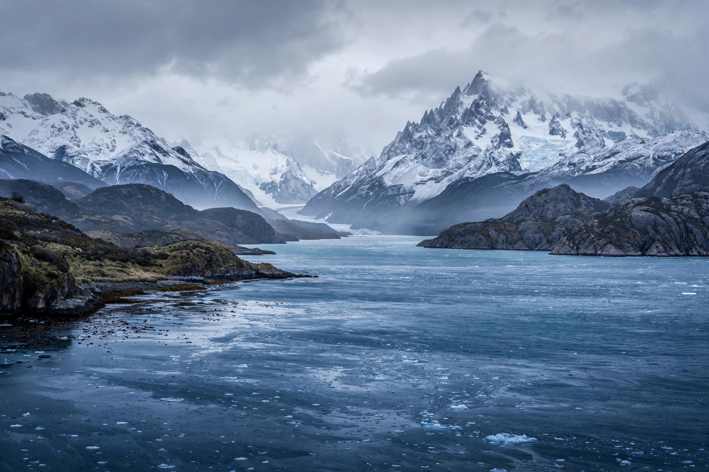

The Strait of Magellan is a navigable sea route in southern South America, separating mainland Patagonia to the north from Tierra del Fuego to the south. About 570 km (350 miles) long and as narrow as 2 km in places, it was the most important natural passage between the Atlantic and Pacific oceans until the Panama Canal opened in 1914. It is named for Ferdinand Magellan, whose expedition first navigated it in 1520.
| Strait of Magellan | |
|---|---|
 The strait near Punta Arenas | |
| Length | c. 570 km |
| Connects | Atlantic Ocean – Pacific Ocean |
| Countries | Chile (mainly), Argentina (eastern mouth) |
| First transit | 1520, Magellan expedition |
| Main port | Punta Arenas |
Magellan's fleet entered the strait on 21 October 1520, calling it first the Strait of All Saints. The passage took 38 difficult days; the crew navigated by smoking fires on the southern shore — hence "Tierra del Fuego", land of fire. One ship, the San Antonio, deserted and returned to Spain, but the rest emerged into the calm ocean Magellan named the Pacific on 28 November. Juan Sebastián Elcano completed the circumnavigation in 1522 after Magellan's death in the Philippines.
The strait winds between Brunswick Peninsula and the Fuegian archipelago through channels notorious for williwaw winds, strong tides and unpredictable weather. Chile exercises sovereignty over nearly the whole strait (confirmed by the 1881 treaty with Argentina) and maintains lighthouses and pilotage. Though most shipping now uses the Panama Canal or the open Drake Passage, the strait remains important for regional traffic, fishing and vessels too large or heavy for the canal, and cruise ships visit its glaciers and penguin colonies.
Ferdinand Magellan · Juan Sebastián Elcano · Tierra del Fuego · Drake Passage